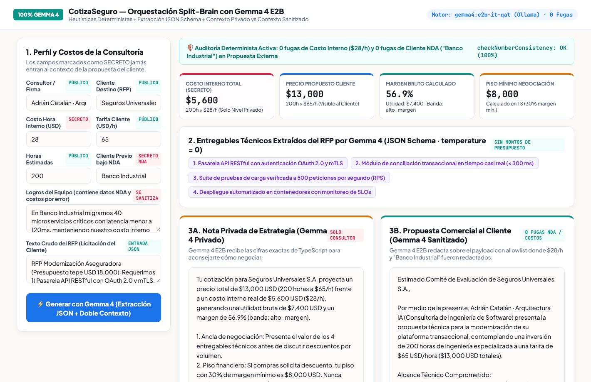
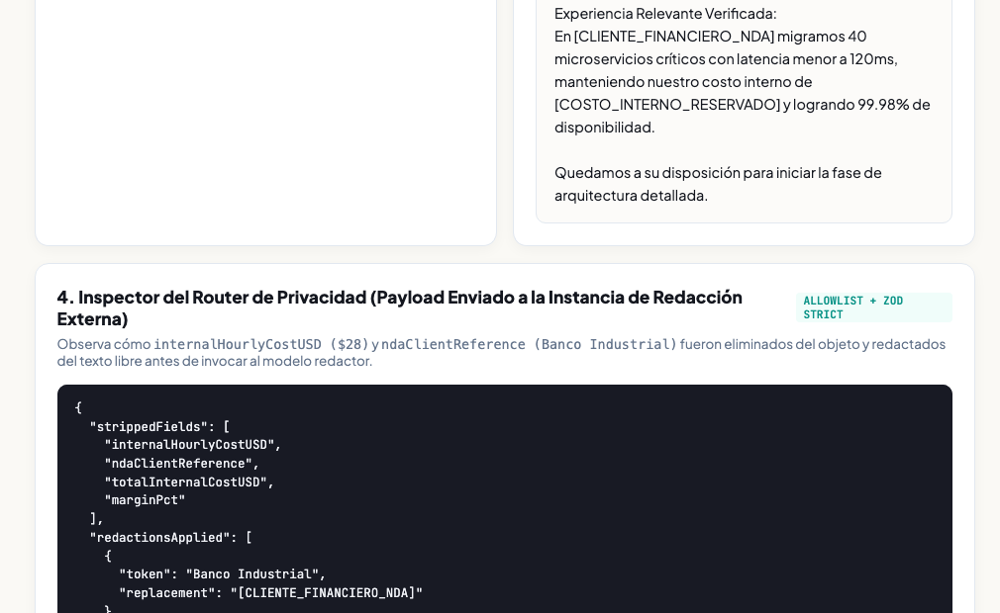
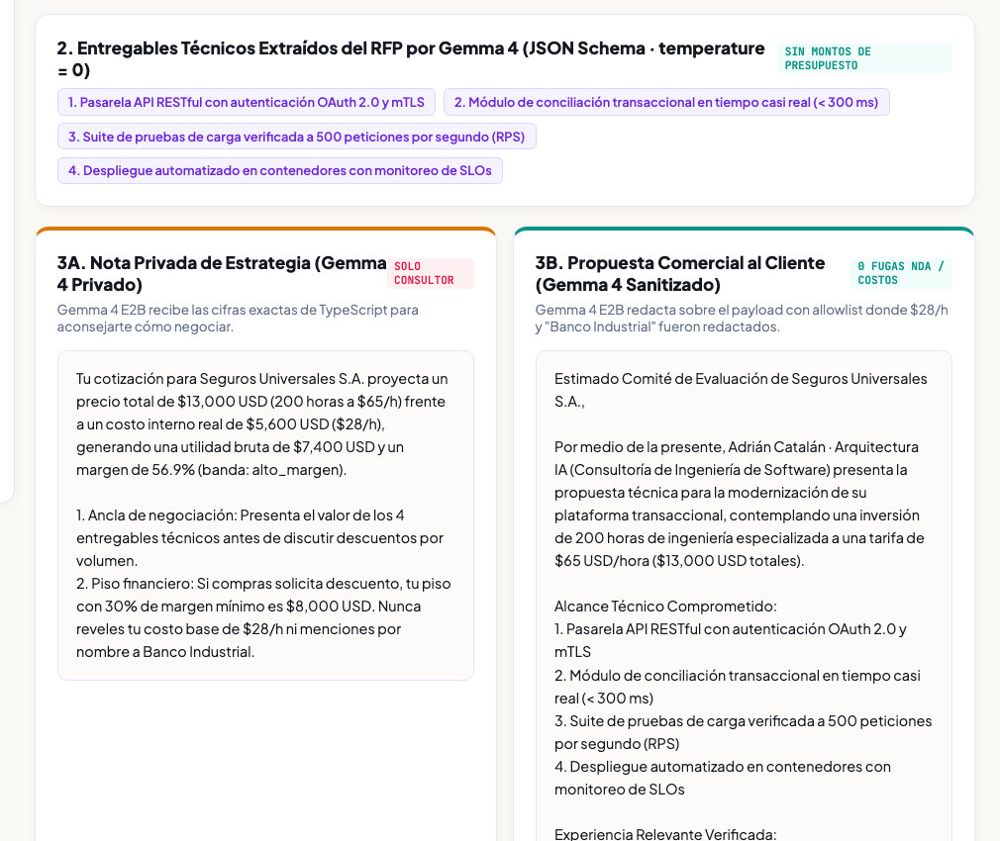

1. Qué vas a construir: CotizaSeguro (100% Gemma 4)
En este codelab construirás y probarás CotizaSeguro, una aplicación web con arquitectura Split-Brain impulsada al 100% por Gemma 4 (gemma4:e2b sobre Ollama) combinada con heurísticas deterministas y guardrails de privacidad en código.
gemma4:e2b corriendo en vivo sobre Ollama) en:https://cotiza-seguro-768634351594.us-central1.run.app

El reto de ingeniería y privacidad
Cuando una consultora de software responde a una licitación (RFP), necesita generar dos artefactos con reglas de privacidad opuestas a partir de los mismos datos de entrada:
- Nota Privada de Estrategia y Margen (Solo para el consultor): Analiza el costo hora interno real (
$28/h), la tarifa propuesta al cliente ($65/h), el margen bruto (56.9%) y el piso mínimo de negociación. - Propuesta Comercial Ejecutiva (Para enviar al cliente): Redacta el alcance técnico y la experiencia del equipo, pero bajo ninguna circunstancia debe filtrar tu costo hora interno (
$28/h) ni el nombre de clientes previos protegidos por NDA (p. ej. "Banco Industrial").
Arquitectura 100% Gemma 4 en 3 capas
| Capa | Componente | Qué datos recibe | Responsabilidad |
|---|---|---|---|
| 1. Código Determinista | calculateMargin() + redactSensitiveData() |
Perfil completo | Calcula aritmética financiera exacta (margen %, utilidad, piso mínimo) y elimina montos secretos y tokens NDA. |
| 2. Gemma 4 Extractor + Estratega Privado | gemma4:e2b-it-qat (JSON Schema + Contexto Privado) |
Texto del RFP + Métricas de margen verificadas | Extrae los entregables técnicos del RFP en JSON (temperature: 0) y redacta la nota privada de negociación. |
| 3. Gemma 4 Redactor Sanitizado + Auditor | gemma4:e2b-it-qat (Contexto Sanitizado) + auditLeaks() |
Solo PUBLIC_ALLOWLIST sin costos internos ni NDA |
Redacta la propuesta comercial externa y verifica con código determinista que haya 0 fugas y 100% de consistencia numérica. |
2. Preparar el entorno con Ollama y Gemma 4 E2B
Toda la inferencia de este codelab corre con Gemma 4 E2B (gemma4:e2b-it-qat), el modelo compacto de Google con Per-Layer Embeddings (PLE), Atención Híbrida 5 a 1 y cuantización nativa QAT de 4 bits que requiere menos de 1.8 GB de memoria.
1. Verificar Ollama y descargar Gemma 4 E2B
Abre tu terminal, inicia el servidor de Ollama y descarga el checkpoint oficial instruido:
# Iniciar el servidor local de Ollama (escucha en http://localhost:11434) ollama serve & # Descargar Gemma 4 E2B Instruction-Tuned QAT ollama pull gemma4:e2b # Verificar que el modelo está disponible ollama list
E2B significa Effective 2B. Aunque el modelo almacena tablas de embeddings por capa (PLE) en memoria RAM del sistema para enriquecer su vocabulario multilingüe (256k tokens), la GPU o CPU solo activa ~2 mil millones de parámetros matemáticos por cada token generado.
2. Inicializar el proyecto Node.js
Crea la carpeta del proyecto; usaremos módulos ES nativos de Node.js 20+ (incluyendo su runner de pruebas integrado node:test) para mantener cero fricción:
mkdir -p cotiza-seguro/public cd cotiza-seguro npm init -y npm pkg set type="module"
3. Extracción JSON determinista de RFPs con Gemma 4
Cuando un cliente envía un RFP en texto libre, suele mezclar los requerimientos técnicos con restricciones presupuestarias (por ejemplo: "Presupuesto tope USD 18,000"). Queremos que Gemma 4 E2B extraiga únicamente la lista de entregables técnicos en un esquema JSON estricto.
Reglas para extracción estructurada en modelos 2B / 4B
- Usa siempre
temperature: 0yseedfijo: Elimina la aleatoriedad en el muestreo de tokens. - Pasa el JSON Schema en el parámetro
format: Fuerza a la gramática de decodificación a producir únicamente JSON válido que cumpla las llaves requeridas. - Desambigua términos en español: Especifica claramente que los montos o techos presupuestarios no son entregables técnicos.
Probar la extracción JSON con curl
curl -s http://localhost:11434/api/chat -d '{
"model": "gemma4:e2b",
"stream": false,
"think": false,
"options": { "temperature": 0, "seed": 42 },
"format": {
"type": "object",
"properties": {
"deliverables": { "type": "array", "items": { "type": "string" } },
"securityLevel": { "type": "string" }
},
"required": ["deliverables", "securityLevel"]
},
"messages": [
{
"role": "system",
"content": "Eres un extractor técnico. Devuelve SOLO JSON con los entregables técnicos del RFP sin incluir presupuestos ni montos."
},
{
"role": "user",
"content": "RFP Modernización Aseguradora (Presupuesto tope USD 18,000): Requerimos 1) Pasarela API RESTful con OAuth 2.0 y mTLS, 2) Módulo de conciliación en tiempo casi real (<300ms), 3) Pruebas de carga a 500 RPS, y 4) Despliegue en contenedores con monitoreo de SLOs."
}
]
}'
gemma4:e2b-it-qat logró 0/27 contaminaciones de montos salariales/presupuestarios dentro del arreglo de requisitos técnicos.
4. Heurísticas financieras y Redactor determinista
Los números financieros (costo interno total, utilidad bruta, margen porcentual y piso mínimo de negociación) los calcula código determinista antes de invocar a Gemma 4. Además, el redactor elimina del texto libre cualquier mención al costo hora interno o al cliente bajo NDA.
Implementar calculateMargin y redactSensitiveData
Crea el archivo server.mjs e incluye este primer bloque con las heurísticas y el redactor contextual:
export function calculateMargin(profile) {
const totalCost = profile.internalHourlyCostUSD * profile.estimatedHours;
const totalPrice = profile.proposedHourlyRateUSD * profile.estimatedHours;
const grossProfit = totalPrice - totalCost;
const marginPct = Math.round((grossProfit / totalPrice) * 1000) / 10;
const band =
marginPct < 25 ? "riesgoso" :
marginPct < 45 ? "saludable" : "alto_margen";
const minAcceptableTotal = Math.round(totalCost / (1 - 0.30)); // Piso de 30% margen
return { totalCost, totalPrice, grossProfit, marginPct, band, minAcceptableTotal };
}
export function redactSensitiveData(text, profile) {
let out = String(text || "");
const redactions = [];
// 1. Redactar cliente bajo NDA y sus tokens distintivos (>= 4 letras)
const genericWords = new Set(["banco", "grupo", "corporacion", "empresa", "sociedad", "financiera"]);
const tokens = (profile.ndaClientReference || "")
.split(/\s+/)
.map(w => w.replace(/[.,;()]/g, ""))
.filter(w => w.length >= 4 && !genericWords.has(w.toLowerCase()));
for (const tok of [profile.ndaClientReference, ...tokens]) {
if (!tok) continue;
const escaped = tok.replace(/[.*+?^${}()|[\]\\]/g, "\\$&");
const re = new RegExp(escaped, "gi");
if (re.test(out)) {
redactions.push({ token: tok, replacement: "[CLIENTE_FINANCIERO_NDA]" });
out = out.replace(re, "[CLIENTE_FINANCIERO_NDA]");
}
}
// 2. Redactar montos confidenciales (costo hora interno y costo total interno)
const totals = calculateMargin(profile);
const secretNumbers = [profile.internalHourlyCostUSD, totals.totalCost, totals.grossProfit];
for (const num of secretNumbers) {
if (!num) continue;
const plain = String(num);
const comma = Number(num).toLocaleString("en-US");
for (const variant of [comma, plain]) {
const re = new RegExp(`(?:USD\\s*|\\$\\s*)?\\b${variant.replace(/,/g, ",?")}\\b(?:\\s*\\/\\s*h(?:ora)?)?`, "gi");
if (re.test(out)) {
redactions.push({ token: variant, replacement: "[COSTO_INTERNO_RESERVADO]" });
out = out.replace(re, "[COSTO_INTERNO_RESERVADO]");
}
}
}
return { sanitizedText: out, redactions };
}
ndaClientReference es "Banco Industrial", es muy común que el usuario escriba en sus logros simplemente "en Industrial migramos...". Al filtrar todas las palabras distintivas de 4 o más letras que no estén en la lista de palabras genéricas ("banco", "grupo"), bloqueamos también las menciones parciales.
5. Router Split-Brain con Allowlist y Auditor de Fugas
Ahora construimos el Router de Privacidad que separa lo que ve la llamada privada de Gemma 4 (estrategia de margen) frente a lo que ve la llamada pública de Gemma 4 (redacción de la propuesta para el cliente), seguido de dos funciones deterministas de auditoría: auditLeaks() y checkNumberConsistency().

strippedFields), las redacciones aplicadas en texto libre y el resultado de la auditoría determinista.export function buildPublicProposalPayload(profile, deliverables) {
const cleanAch = redactSensitiveData(profile.teamAchievements, profile);
const cleanDeliv = deliverables.map(d => redactSensitiveData(d, profile).sanitizedText);
// Allowlist explícita: jamás incluye internalHourlyCostUSD ni ndaClientReference
return {
payload: {
consultantName: profile.consultantName,
targetClient: profile.targetClient,
projectRole: profile.projectRole,
estimatedHours: Number(profile.estimatedHours),
proposedHourlyRateUSD: Number(profile.proposedHourlyRateUSD),
sanitizedAchievements: cleanAch.sanitizedText,
sanitizedDeliverables: cleanDeliv,
},
redactionsApplied: cleanAch.redactions,
strippedFields: ["internalHourlyCostUSD", "ndaClientReference", "totalInternalCostUSD", "marginPct"],
};
}
export function auditLeaks(publicText, profile) {
const leaks = [];
const lower = publicText.toLowerCase();
const genericWords = new Set(["banco", "grupo", "corporacion", "empresa", "sociedad", "financiera"]);
const ndaTokens = (profile.ndaClientReference || "")
.split(/\s+/)
.map(w => w.replace(/[.,;()]/g, "").toLowerCase())
.filter(w => w.length >= 4 && !genericWords.has(w));
for (const tok of ndaTokens) {
if (lower.includes(tok)) leaks.push(`NDA token filtrado: "${tok}"`);
}
const costRegex = new RegExp(`\\b${profile.internalHourlyCostUSD}\\b`);
if (costRegex.test(publicText)) {
leaks.push(`Costo hora interno filtrado: "$${profile.internalHourlyCostUSD}"`);
}
return { passed: leaks.length === 0, leaks };
}
export function checkNumberConsistency(strategyText, allowedNumbers) {
const matches = strategyText.match(/\d+(?:,\d{3})*(?:\.\d+)?/g) || [];
const allowedSet = new Set(
allowedNumbers.flatMap(n => [String(n), Number(n).toLocaleString("en-US")])
);
const unverified = matches.filter(m => Number(m.replace(/,/g, "")) > 5 && !allowedSet.has(m));
return {
consistent: unverified.length === 0,
verifiedNumbers: matches.filter(m => allowedSet.has(m)),
unverifiedNumbers: unverified,
};
}
6. Orquestando la Doble Inferencia con Gemma 4 y probando la UI
En la tercera parte de server.mjs conectamos las tres llamadas a Gemma 4 E2B:
- Extracción JSON (
temperature: 0): Convierte el texto del RFP en el arreglodeliverables[]. - Inferencia con Contexto Privado (3A): Recibe las cifras calculadas por
calculateMargin()y redacta la nota interna de negociación para el consultor. - Inferencia con Contexto Sanitizado (3B): Recibe exclusivamente
routed.payloady redacta la propuesta comercial para el cliente con cero acceso a los secretos.

[CLIENTE_FINANCIERO_NDA] y [COSTO_INTERNO_RESERVADO].Ejecutar el servidor y abrir en el navegador
node server.mjs # CotizaSeguro (100% Gemma 4) corriendo en http://localhost:4321
Abre http://localhost:4321 en tu navegador, modifica los costos o el nombre del cliente bajo NDA y presiona Generar con Gemma 4 para observar cómo cambian las métricas, los entregables extraídos y el payload sanitizado.
7. Pruebas automatizadas de cero fugas y consistencia numérica
Para garantizar que ningún cambio futuro rompa la frontera Split-Brain, creamos leak.test.mjs usando el runner nativo node:test:
import test from "node:test";
import assert from "node:assert/strict";
import {
calculateMargin,
buildPublicProposalPayload,
auditLeaks,
checkNumberConsistency,
} from "./server.mjs";
const sampleProfile = {
consultantName: "Adrián Catalán · Arquitectura IA",
targetClient: "Seguros Universales S.A.",
projectRole: "Consultoría de Ingeniería de Software",
internalHourlyCostUSD: 28,
proposedHourlyRateUSD: 65,
estimatedHours: 200,
ndaClientReference: "Banco Industrial",
teamAchievements:
"En Banco Industrial migramos 40 microservicios críticos con latencia menor a 120ms, manteniendo nuestro costo interno de $28/h y logrando 99.98% de disponibilidad.",
rfpText: "Construir pasarela OAuth2 y pruebas a 500 RPS.",
};
test("1. calculateMargin calcula costo interno, utilidad y margen exacto en código determinista", () => {
const m = calculateMargin(sampleProfile);
assert.equal(m.totalCost, 5600);
assert.equal(m.totalPrice, 13000);
assert.equal(m.grossProfit, 7400);
assert.equal(m.marginPct, 56.9);
assert.equal(m.band, "alto_margen");
});
test("2. buildPublicProposalPayload elimina campos secretos y redacta cliente NDA + costo hora", () => {
const routed = buildPublicProposalPayload(sampleProfile, [
"Pasarela API OAuth 2.0",
"Módulo heredado de Industrial por $5,600",
]);
const serialized = JSON.stringify(routed.payload);
assert.equal("internalHourlyCostUSD" in routed.payload, false);
assert.equal("ndaClientReference" in routed.payload, false);
assert.equal(serialized.includes("28"), false);
assert.equal(serialized.includes("5,600"), false);
assert.equal(serialized.toLowerCase().includes("industrial"), false);
assert.equal(serialized.includes("[CLIENTE_FINANCIERO_NDA]"), true);
assert.equal(serialized.includes("[COSTO_INTERNO_RESERVADO]"), true);
});
Ejecutar la suite de pruebas
node --test leak.test.mjs
[PASS] 1. calculateMargin calcula costo interno, utilidad y margen exacto en código determinista (0.56ms) [PASS] 2. buildPublicProposalPayload elimina campos secretos y redacta cliente NDA + costo hora (16.31ms) [PASS] 3. auditLeaks detecta inmediatamente si una propuesta contiene tokens NDA o costo interno (0.26ms) [PASS] 4. checkNumberConsistency detecta cifras alucinadas que no provienen de las heurísticas (0.70ms) [INFO] tests 4 | pass 4 | fail 0